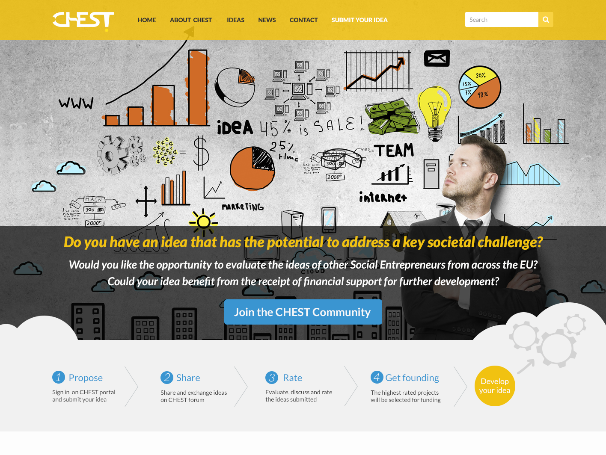
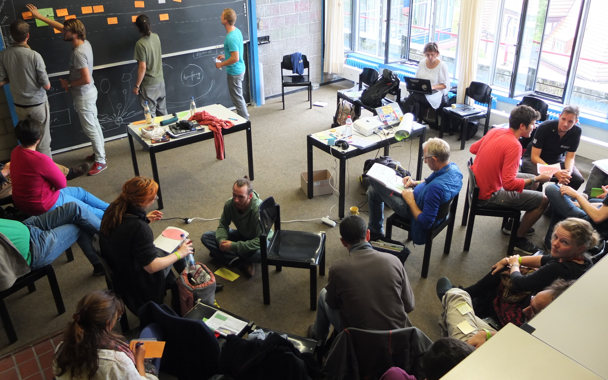
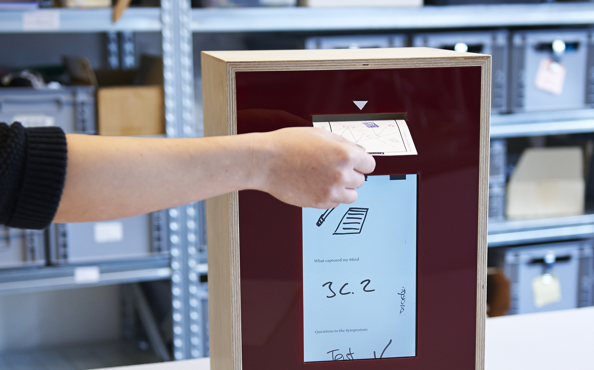

CHEST — Collective Intelligence for Social Good
A European innovation initiative that harnesses social media, crowdsourcing, and collective intelligence to discover and support breakthrough ideas addressing urgent societal challenges.
CHEST mobilizes digital platforms, collective intelligence, and participatory mechanisms to discover and scale social innovations addressing urgent European challenges. The project creates an ecosystem where researchers, social innovators, and citizen participants collaborate as co-creators, developing knowledge and solutions that bridge academic research with practical community needs. Selected innovations receive substantial funding, expert mentorship, and network support to achieve real-world impact.
Problem & Context
Europe faces interconnected challenges in sustainability, health, digital inclusion, and social equity. Addressing these effectively requires not only scientific expertise but also practical knowledge from communities, civil society, and social entrepreneurs. Yet traditional research and funding models often fail to tap this distributed intelligence, marginalizing grassroots solutions and limiting the impact of innovations that might benefit millions. CHEST responds by creating inclusive platforms where citizens, researchers, and innovators collaborate as equals in identifying and developing solutions with genuine societal impact.
Collective Intelligence for Social Innovation
CHEST pioneers a Digital Social Innovation approach that differs fundamentally from traditional research funding. Rather than scientists defining problems for citizens to solve, CHEST enables citizens, social entrepreneurs, and researchers to work as co-designers—with citizens and communities defining priorities and shaping solutions that affect their lives.
Harnessing Distributed Intelligence Through Open Calls
CHEST conducts multiple structured open calls that invite breakthrough ideas from any source: social entrepreneurs, civil society organizations, community groups, and individual innovators. Ideas are evaluated not only by expert panels but also through community voting and feedback, ensuring that solutions reflect diverse perspectives and real-world needs.
Digital Platforms & Collective Evaluation
The CHEST platform leverages social media and participatory mechanisms to enable broad-based engagement. Rather than evaluating ideas in isolation, the community participates in assessing, improving, and validating solutions, creating a collective intelligence system that strengthens emerging innovations through many eyes and experiences.
Meaningful Funding & Sustained Support
Selected innovations receive substantial EU funding to move from concept to implementation—not mere seed grants, but resources sufficient to test and scale solutions. Beneficiaries gain access to expert networks, business mentoring, policy connections, and implementation partnerships essential for real-world impact.
Empowering Citizens as Knowledge Brokers
CHEST treats citizen participants not as passive data providers but as knowledge brokers—individuals with expertise about community needs and solutions. By involving diverse communities in defining challenges and co-designing responses, CHEST ensures innovations address genuine societal needs and have pathways to adoption and scaling.


Impact & Results
CHEST conducted two major open innovation campaigns, receiving hundreds of proposals from across Europe. The CHEST Challenge Workshop (Berlin, July 2014) brought together innovators, funders, policymakers, and implementers to accelerate progress on selected innovations. CHEST supported diverse social innovations addressing critical challenges including digital inclusion, environmental sustainability, health literacy, and civic engagement, with beneficiary projects ranging from platforms for circular economy to tools for enhancing citizen participation in governance.
Citizens involved
Grassroots initiatives funded
Seed funding to beneficiaries
European countries
EIPCM’s Role
EIPCM served as a research partner and citizen engagement expert in the CHEST project, contributing research and strategic guidance on participatory design, collective intelligence, and citizen engagement. The institute brought expertise in designing and implementing mechanisms for meaningful citizen participation in innovation processes, particularly in structuring how citizens and communities could engage as knowledge brokers and co-designers in identifying and developing solutions to societal challenges.
EIPCM’s research contributions addressed critical questions about effective citizen engagement models in Digital Social Innovation contexts: how to motivate sustained participation, how to structure platforms for meaningful knowledge co-creation, and how to empower citizens from diverse backgrounds to influence project design and outcomes. These insights informed CHEST’s approach to community engagement, evaluation processes, and the scaling of selected innovations through collaborative networks.
Consortium
Core Partners
- Engineering Ingegneria Informatica (Coordinator)
- PNO Consulting
- EIPCM (Germany)
Associated Partners
- 18 associated partners
- Technology providers
- Innovation networks & civil society organisations